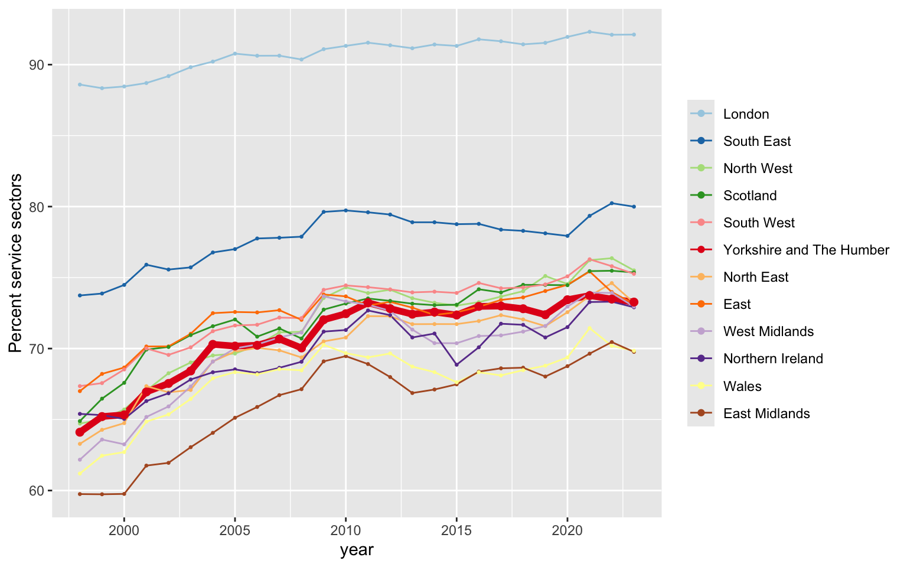
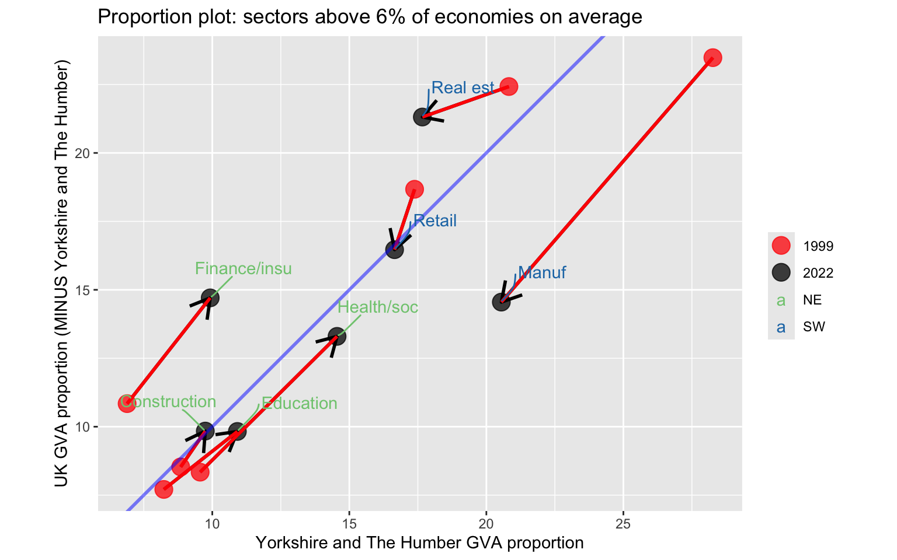
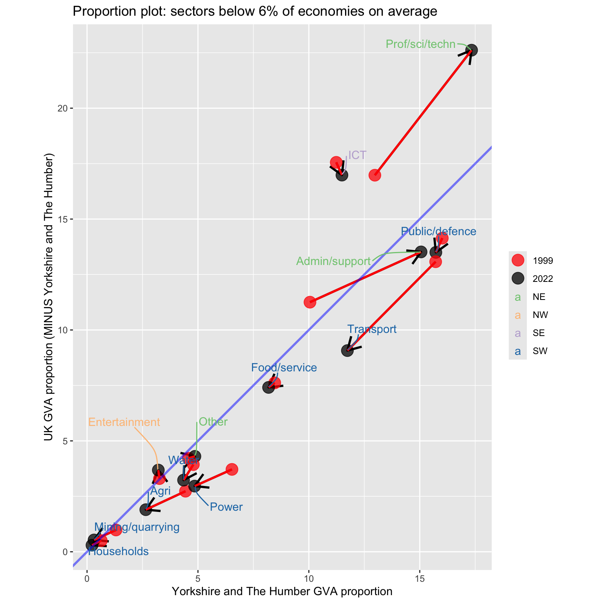
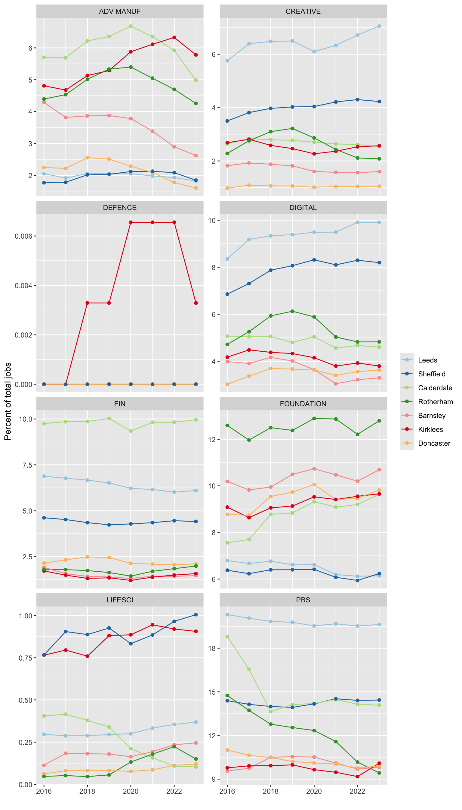
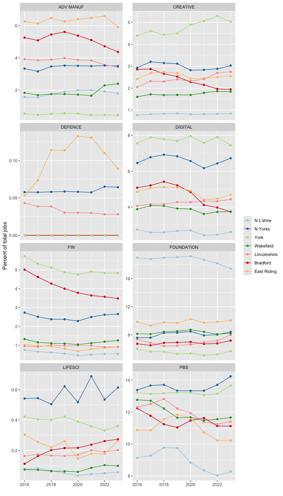
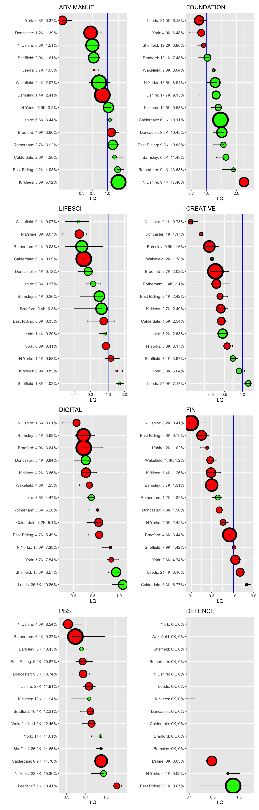

Yorkshire and The Humber sector analysis (November 2025)
Introduction
This top-level report is one of three examining the economy of Yorkshire and the Humber.
The document you are reading now does two things:
- Gives a quick overview of the historical structural change of YNH’s economy since 1998 (when the ONS regional GVA data begins).
- Connects the Yorkshire Humber economy to the UK industrial strategy, looking at economic strengths in terms of job proportions and LQs.
There are two connected documents:
- A Yorkshire and Humber sector catalogue that includes detailed analysis of sector strengths across the region. This document contains the most granular detail, and has a full guide and explanation on how to use it.
- A catalogue of growth trends for sectors in each Y&H sub region that shows in detail where GVA and productivity growth has been significantly higher or lower than the rest of the UK. The page contains a guide to reading the plots - every place has distinct sectors that stand out, confirming findings from the sector catalogue. The only really striking thing to note is how many sectors have been significantly growing in Wakefield. (Wakefield gets many mentions in the sector analysis document.)
Structural history of Y&H
Production vs services
The trend toward service sectors has been consistent across the UK. While London service sectors have any modestly increased from a very high high-level in 1998, the rest of the UK - including Yorkshire & Humber - saw their service proportion increase rapidly, somewhat closing the gap to London, until the 2007/08 financial crisis led to a stall in that trend.
Y&H has stayed very much with the UK trend outside of London and the Southeast, including the more recent up uptick the proportion of services since COVID.
How broad sectors have changed in Y&H compared to the rest of the UK
The two plots below show what this structural change has meant for different broad sectors in Y&H. They show:
Sector proportion for Y&H along the bottom axis, with the arrow pointing to change between 1998-2000 and 2021/23.
The same proportion change for the rest of the UK (minus Y&H) is on the vertical axis.
Any point to the right of the diagonal line shows a sector more concentrated in Y&H compared to the UK as a whole.
What these plots show is that while the same structural shift towards services happened everywhere, it did not happen evenly. The proportion of manufacturing went ‘southwest’ - it shrunk everywhere - but it was a lot more concentrated in YNH and so transformed its economy more profoundly.
In the opposite direction, going ‘northeast’, service sectors like finance and the professional, scientific and technical sectors, increased the proportion everywhere - but their increase was less concentrated in YNH.


Y&H’s industrial strategy sectors
This section uses BRES job count data to examine how Y&H connects to the ‘IS-8’ priority groups from the UK Industrial Strategy. It takes the strategy’s sector definition list (see below) and counts jobs in each list. These sometimes overlap across different IS-8 categories and so appear more than once.
The plots below do this:
The first set of sector percent plots compare Y&H places to each other in each IS-8.
The second set, looking at IS-8 location quotients, show where Y&H places have a higher concentration than the UK average for each IS-8.
Here are some points that jump out from cross-referencing this set of plots:
Many places have a very high concentration of advanced manufacturing, compared to the rest of the UK. Whilst several places have been stable or seen the percent drop over time, Kirklee’s job proportion has been growing. The IS-8 advanced manufacturing sectors are concentrated in quite desperate places across Y&H: Calderdale, Kirklees and Bradford on closest together, but East Riding, Rotherham and Lincolnshire also have a higher than UK average concentration.
Digital sectors do not have a higher than average LQ anywhere in Y&H, but the sector grouping has been growing in a few places, especially in Leeds in Sheffield, and the grouping is also strong in York and North Yorkshire.
Equally, the ‘Creative’ IS-8 grouping does not have high LQs, but it has been increasing over time in Leeds, Sheffield and York.
Foundation sectors have been steady or growing overtime in several Y&H subregions, with the South Yorkshire local authorities of Rotherham, Doncaster and Barnsley standing out, as well as North Lincolnshire.
For the finance IS-8, Calderdale has remained steadily at the top, jobs percent wise, consistently around 10% of its total full-time employment, with Leeds and Sheffield a little way behind, as too are Bradford and York, two places where job proportions have been steadily dropping. Cross referencing with the sector analysis (see here) while Doncaster has not seen strong jobs growth in these sectors, it is still a stand out in productivity increases.
The professional and business services IS-8 picks up on a great deal of rapid change in the region. A high proportion of both York and North Yorkshire jobs are in these sectors, and they have been increasing since COVID. Leeds still has the highest proportion - around a fifth of its jobs - and that percentage has hardly moved. However, both Calderdale and Rotherham have experienced some rapid drops, suggesting the loss of some major firms.
The Industrial Strategy data
The UK Industrial Strategy was released in 2025, with accompanying plans for 6 out of the 8 target “IS-8” sectors. It also has a sector definition list that provides SIC codes being targeted - top level sectors and ‘frontier’ subsectors (a few of which overlap; most do not). These range in specificity between 2 digit and 5 digit SIC codes.
As that webpage says, most of these SIC codes cannot capture the full range of possible firms the strategy aims to cover, and it also contains entire sections that SIC codes can’t cover at all - clean energy and certain digital sectors in particular. However, it does allow an analysis of which sectors are definitely within those industrial strategy categories. The plots below gather job details for those specific sectors - a distinct range of types and breadth - and examines Yorkshire and Humber to see how its industrial strategy-aligned sectors compare.
The table below lists the IS-8 broad sector headings. In the IndStrat plots, the abbreviations for these IS-8 headings appear before the sector name. Clean energy - as mentioned above - has no SIC codes and so can’t currently be matched.
| IS8 sector | Abbreviation |
|---|---|
| Advanced Manufacturing | ADV MANUF |
| Clean Energy Industries | – |
| Creative Industries | CREATIVE |
| Defence | DEFENCE |
| Digital and Technologies | DIGITAL |
| Financial Services | FIN |
| Life Sciences | LIFESCI |
| Professional and Business Services | PBS |
Industrial strategy: jobs as a percent of each place’s whole economy, for each IS-8: change over time
This plot is repeated for two groups of Y&H authorities, showing how each place compares to others in Y&H.


Industrial Strategy: job LQs per IndStrat category, ordered by Y&H place LQ
